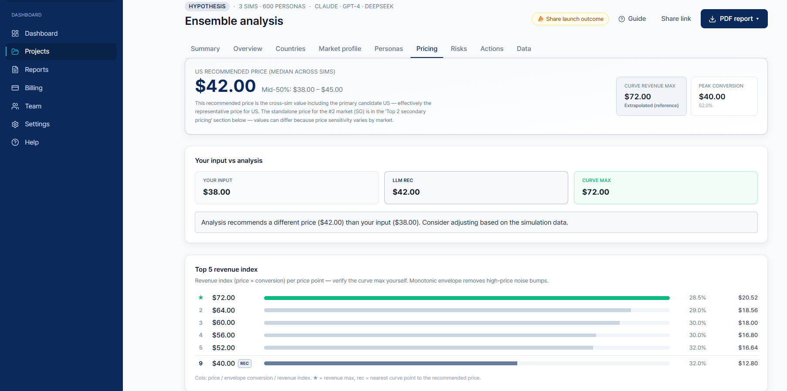

출시 전에, 어느 시장에서 이길지 검증하세요.
AI 페르소나가 24개국에서 제품을 몇 달이 아닌 며칠 만에 테스트합니다.
어느 나라에 실제 수요가 있나? 가격은 얼마? 진짜 사는 사람은 누구? 새 시장 출시는 눈을 감은 베팅이라, 창업자는 예산을 다 쓴 뒤에야 결과를 압니다. 실패율은 냉혹합니다: 신규 수출기업 6곳 중 1곳만 5년을 버팁니다.
분석 1회당 24개국에서 600~5,000명의 AI 페르소나를 돌려 수요·가격·경쟁·구매의향을 출시 전에 예측합니다. 본국(원산지)은 24개국 중 어디든 될 수 있고, 나머지 23개국의 수요를 모델링합니다. 6개월치 리서치를 며칠 만에.
진출 우선순위, 24개국
시장별 가격민감도 곡선
실제 경쟁사 가격에 기반
페르소나별 반응 · CAC
→ 3종 PDF 리포트로 제공 — 경영진 요약본, 상세 리포트, 교차검증 리포트. 비전문가 창업자도 입력만 채우면 됩니다.
6단계 위저드, 기술 지식 불필요
멀티-LLM 앙상블, 현지화
KOTRA · UN Comtrade · World Bank
시장 · 가격 · 리스크 · 로드맵
핵심: 환각이 아니라 실제 통계에 기반합니다. 멀티-LLM 앙상블을 여러 번(티어별 3~25회 이상) 독립 실행해 중앙값·득표율로 집계하여 특정 모델의 편향을 제거하고, 실제 결과 대비 백테스트로 정확도를 검증합니다.

실제 정부 · 무역 데이터로 만든 페르소나 — 각국의 실제 소득·문화·유통채널을 반영합니다. 범용 AI나 단일시장 설문 도구와는 근본적으로 다릅니다.
예: 베트남 페르소나는 현지 소득·K-콘텐츠 영향·정식수입 신뢰를 따집니다 — 미국식 고정관념이 아니라.
멀티-LLM 앙상블 + 중앙값 집계 + 실제 결과 대비 백테스트. 단일 블랙박스의 추측이 아닙니다.
모든 발언은 인용 통계로 추적 가능하고, 신뢰도는 STRONG / MODERATE / WEAK로 정직하게 표기.
모든 시뮬레이션이 공용 페르소나 풀을 키웁니다 — 쓸수록 더 정확해지고 실행 비용은 낮아집니다.
1회당 600~5,000 페르소나가 프로젝트·고객 전반에서 재사용되는 풀을 정제 — 경쟁사가 복제 불가한 데이터 자산.
어디에, 얼마에, 누구에게를 먼저 결정 — 수출/마케팅 도구의 상류에 위치합니다. 경쟁이 아닌 보완재.
이제 origin-agnostic: 24개국 어디든 본국이 될 수 있고 각국 공식 데이터로 그라운딩.
단독 구축한 상용 스택 — 얇은 GPT 래퍼가 아니라 실통계에 그라운딩된 멀티-LLM 엔진.
원산지 + 후보국
국가별 정부·무역 데이터
24개국, 현지화
제공자 라운드로빈
수요 · 가격 · 의향
모델 편향 제거
정직한 캘리브레이션
경영진 · 상세 · 교차검증
폐루프: 실제 출시 결과가 outcome corpus로 유입돼 공용 페르소나 풀과 신뢰도 캘리브레이션을 지속 개선 — 돌릴수록 제품이 복리로 강해집니다.
분석 1회는 추론 부하가 큽니다: 200 페르소나 × 3~25 시뮬(다중 LLM에 분산) = 600~5,000 페르소나-런. 이를 경제적으로 확장하는 건 컴퓨팅 문제이며, 우리 로드맵은 NVIDIA 위에서 돕니다.
데이터가 해자입니다. 모든 실행이 페르소나 풀 + outcome corpus를 복리로 키우고 — NVIDIA GPU로 이를 비용·모델 우위로 전환합니다(확장 시).
NVIDIA가 방금 스타트업 컴퓨팅 이니셔티브를 시작했습니다 — 크레딧/수익공유 방식으로 고성능 GPU 인프라에 접근해 AI 스타트업의 자본 부담을 완화합니다.
하드웨어 구매가 아니라 DGX · DSX 용량에 크레딧/수익공유로 접근.
인도네시아 Batam의 신규 DSX AI 팩토리 — 우리 싱가포르 beachhead에서 약 30분.
추론 부하 큰 페르소나 시뮬 + 파인튜닝 로드맵이 정확히 이 용도 — NVIDIA Inception으로 컴퓨팅 + VC 네트워크에 연결.
이는 "자체 GPU 추론" 로드맵의 리스크를 해소 — 컴퓨팅 해자가 감당 가능해지고, 지리적으로 ASEAN/싱가포르 확장과 맞물립니다.
20개 브랜드를 11개 origin 국가·5개 카테고리에서 실제 수출 결정 시점으로 되돌려 — 그 당시 공개된 정보만 입력하고 — "어느 시장에 진출해야 하는가"를 물었습니다.
Hindsight-controlled, 24개 시장 내, 정답 = 첫 지속 해외시장. 미스·알려진 편향 전부 공개, 라이브 outcome corpus로 실측 정확도를 지속 측정.
최대 정확도 누수 진단 — 근접시장 편향. 대응책 배포: (1) 국가별 라이브 수요 축(검색량+추이 · TikTok · Baidu-CN); (2) 거시가 못 보는 brand-specific GTM 신호 — 기존 발자국 · 유통/라이선싱 파트너 · 팀 네트워크 시장(유저 입력 + 웹 발굴); (3) dominance 기반 캘리브레이션 — STRONG은 이제 cross-model 합의 + 명확한 마진 필요. 라이브 신호는 위 hindsight 백테스트가 아니라 실제 출시를 끌어올립니다.
AI가 시장조사 비용을 붕괴시키고 있습니다 — $153B+ 글로벌 인사이트 산업 안의 $56B 시장조사 부문. 타깃: 여러 나라에 신제품을 자주 출시하는 소비재 / D2C / SaaS 기업.
출처: ESOMAR / Research World, 2024 (인사이트 산업 $142B → $153B YoY). Beachhead(SAM): 국경을 넘어 확장하는 소비재 / D2C 브랜드 — 출시 예산을 쓰기 전 빠른 다국가 검증이 가장 필요한 세그먼트.
Hypothesis 2회 / 7일 · 카드 불필요
월 5회 Consensus · 1인
$399
월 10회 · Consensus Plus 3회 포함 · 1인
$999
월 20회 · Triangulated 3 + Consensus Plus 5 · 3인
$2,299
확장: 엔터프라이즈 컨설팅 · API 라이선싱(ERP 연동). 국내 KRW / 글로벌 USD.
※ 가격은 베타 검증 후 확정 (현재 라이브 요율 기준, USD는 근사치).
아직 허수 지표는 없습니다 — 파일럿 이전 단계이며, 그렇게 밝힙니다. 하지만 제품은 오픈 베타로 라이브(프로토타입 아님)이고, 정확도는 이미 백테스트됐습니다.
모든 나라가 공공 수출지원 기관을 운영합니다(KOTRA · JETRO · Enterprise Singapore · GTAI …). Market Twin은 이들 기관의 중소 수출기업에 바이어 매칭에 앞서 "어디에 / 어떤 가격에 / 누구에게"라는 의사결정 레이어를 제공 — 글로벌 채널이며 한국을 첫 beachhead로 시작합니다. 아웃리치 예정 — 아직 접촉 전.
K-product B2B + 공공 수출채널. 파일럿 · 사례 구축.
시장 · 페르소나 확장, 현지 PR / 컨퍼런스.
북미 · 유럽, 24개국 커버리지, 버티컬 모델.
채널: B2B 직접 영업 · 공공 수출기관 제휴 · 사례 / 콘텐츠.
| 항목 | Market Twin | 전통 리서치 회사 | AI 설문 / 합성 사용자 |
|---|---|---|---|
| 속도 | ✓ 며칠 | 6~12개월 | 단일 시장 위주 |
| 비용 | ✓ 수백~수천 달러 | $500K+ | 중간 |
| 다국가 | ✓ 24개국, 현지화 | 프로젝트별, 고비용 | 제한적 |
| 데이터 그라운딩 | ✓ 정부 · 무역 데이터 | 패널 | 약함 (환각 위험) |
| 가격 / CAC 추천 | ✓ AI 기반 | 수작업 | 없음 |
| 신뢰성 검증 | ✓ 백테스트 | 방법론 | 없음 |
혼자서 상용 수준 제품을 처음부터 끝까지 만들어 출시한 솔로 파운더. 린하고 AI를 지렛대 삼은 실행 — 작동하는 제품이 가장 강한 증거입니다.
이 덱의 모든 수치는 실제이거나 미검증으로 명시 — 날조된 팀 · 트랙션 · 이력 없음.
Seed · 약 18개월 런웨이 — 라이브 제품에서 첫 매출과 반복 가능한 세일즈까지.
가정: 고객당 월 매출(ARPA) ~$600~2,000 · 무료 베타 → 유료 전환 · 공공 수출지원 채널로 낮은 CAC. 상향식 — 하키스틱 아님.
구조적으로 자본효율적: 제품은 이미 구축 · 라이브 — 자금은 재구축이 아니라 GTM과 첫 2명 채용에. 이 계획으로 18개월 내 MRR ~$35K · Pre-A 준비 도달.
출시 검증 시뮬레이션의 표준 — 모든 국경 넘는 제품 결정 전 기본 점검.
경쟁사 가격·출시·카테고리 변화를 상시 추적하는 AI 애널리스트.
ERP · PLM · 마케팅 워크플로에 Market Twin 스코어링 임베드 (SAP · Salesforce).
우리의 목표 — 모든 기업이 데이터 기반으로 글로벌 확장을 결정하는 세상.